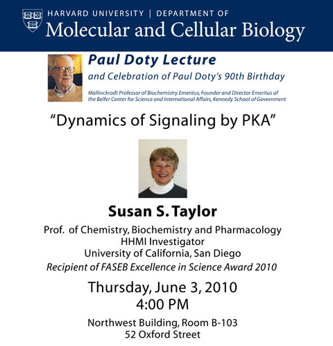

News Archives : 2010 : Susan S. Taylor to Deliver 2010 Paul Doty Lecture
by Richard Saltus
May 20, 2010
Biochemist Susan S. Taylor, recipient of the 2010 FASEB Excellence in Science Award, will give a talk on Thursday, June 3, to celebrate the 90th birthday of Paul Doty, who founded the Department of Biochemistry and Molecular Biology during 42 years on the Harvard Faculty and devoted a parallel career to arms control and international relations.
Taylor, who characterized protein kinase A (PKA) - the founding member of the protein kinase family that serves critically important cell-signaling functions - is Professor of Chemistry, Biochemistry and Pharmacology and a Howard Hughes Medical Institute (HHMI) Investigator at the University of California, San Diego (UCSD).
She will speak on “Dynamics of Signaling by PKA” at 4 pm in Northwest Building room B-103.
In 1991, Taylor and colleagues at UCSD solved the three-dimensional crystal structure of PKA, also known as cAMP. PKA and its family members – about 500 protein kinase genes have been identified are found throughout the body. They help regulate memory, development, cell growth and death. Mutations in protein kinases are common in many forms of cancer, and kinase inhibitors are playing an increasingly large role in cancer drug development.
Taylor received her BA from the University of Wisconsin and her PhD from Johns Hopkins University.
In April, she received the 2010 Excellence in Science Award from FASEB (the Federation of American Societies for Experimental Biology). The award “recognizes women whose outstanding career achievements in biological science have contributed significantly to further our understanding of a particular discipline by excellence in research.”
HHMI has supported Taylor’s research since 1997. She is a fellow of the American Association for the Advancement of Science (AAAS), and was elected to the National Academy of Sciences and the Institute of Medicine.
Doty is Mallinckrodt Professor of Biochemistry Emeritus and also Director, Emeritus, of the Belfer Center for Science and International Affairs, which he founded at the John F. Kennedy School of Government in 1974. He is now emeritus professor in the Faculty of Arts and Sciences (1988) and in the Kennedy School of Government (1990).
As a biochemist, Doty elucidated the structure and function of large molecules, from polymeric molecules, which constitute plastics and fibers, to polypeptides and polynucleotides, which consist of single repeating units of the kind involved in proteins and nucleic acids. He is perhaps best known for demonstrating the denaturation of the double-stranded DNA molecule and its reuniting through hybridization; this technique was key to the era of recombinant DNA research.
As an advocate for arms control, Doty led and participated in many initiatives to bring Russian and American scientists together in pursuit of international security, making more than 40 trips to the Soviet Union. He was a member of the President's Science Advisory Committee (PSAC) during the Kennedy Administration. After retirement, he continued working in this area, for example serving as board member of Soros' International Science Foundation that provided critical research support to Russian scientists in the 1990s.